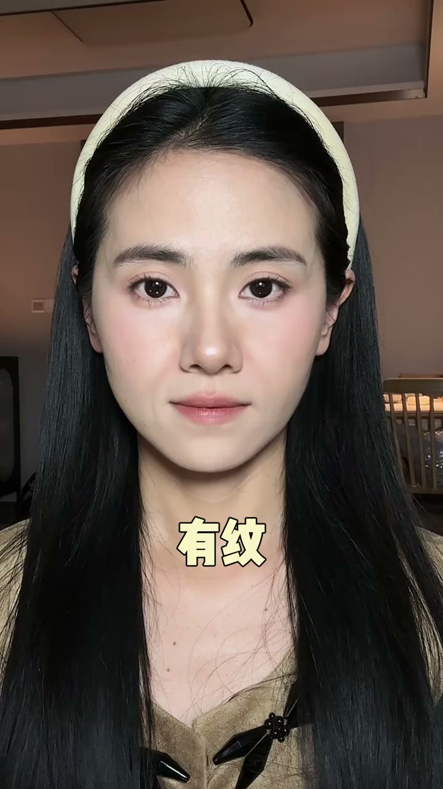
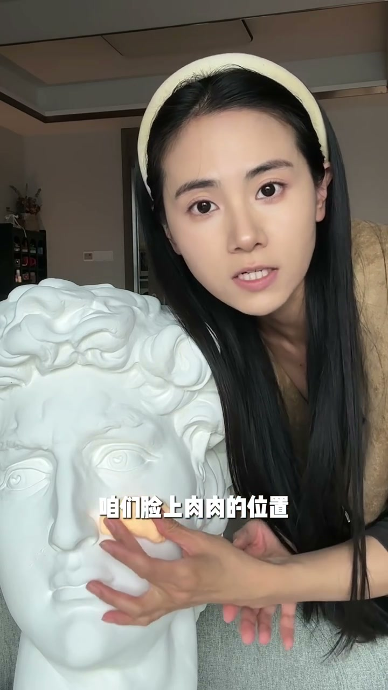
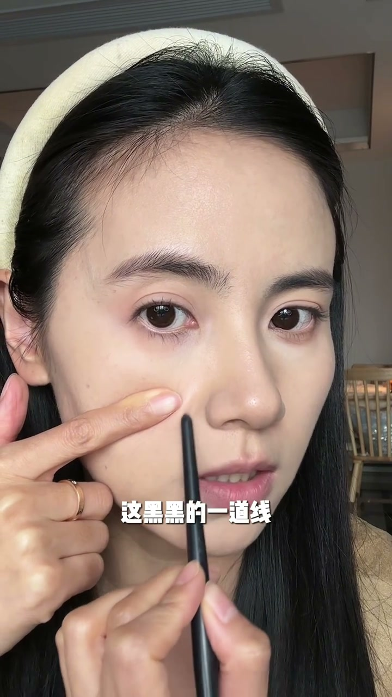
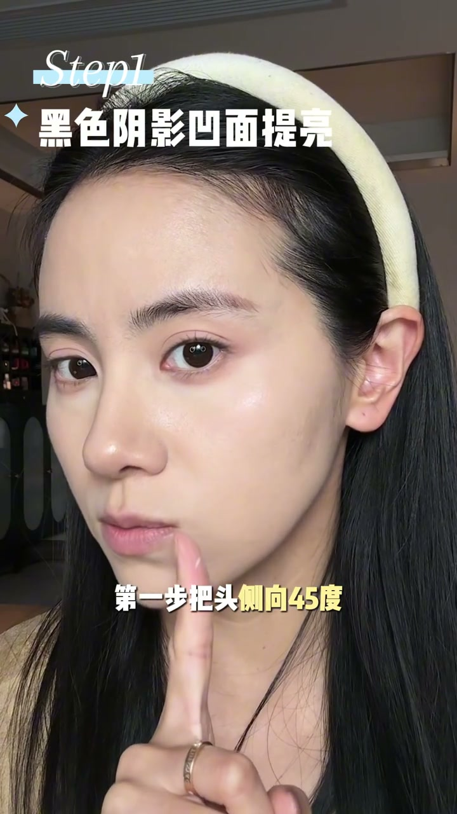
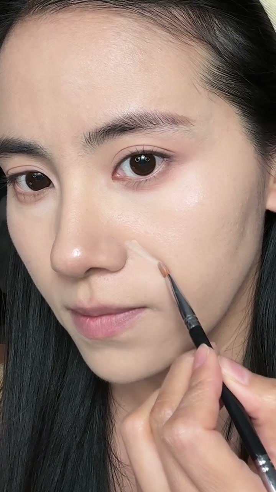

01
中文
有纹没纹，脸一下子年轻10岁。
EN
With or without the folds, the face looks ten years younger.
表达提示ten years younger（年轻10岁）

Scene English · 美妆 · 遮法令纹
Concealing Nasolabial Folds — Area & Technique for Beginners
🎧 语音讲解
Opening: with or without the folds, the fa…
情境范围错或太厚都是常见坑。
有纹没纹，脸一下子年轻10岁。
With or without the folds, the face looks ten years younger.
表达提示ten years younger（年轻10岁）
要么范围不对遮了跟没遮一个样，要么厚厚一坨全卡在鼻翼两侧。
Either you miss the area or pile on a blob that cakes at the nose wings.
表达提示cake at the nose（卡鼻翼）
从原理到手法再到工具，一次讲清楚这种凹凸结合的立体结构。
Principle to technique to tools, in one pass for this raised-and-recessed structure.
表达提示raised-and-recessed（凹凸结合）
ten years younger（年轻10岁
cake at the nose（卡鼻翼

Principle: normally the fullest point of t…
情境提亮暗线+上移高光面。
正常情况下，整个面中最膨的位置应该在苹果肌这里。
Normally the fullest point of the mid-face is the apple cheeks.
表达提示fullest point（最膨点）
苹果肌往下掉堆积在鼻翼旁边，阴影就变得更深。
Dropped apple cheeks pile beside the nose and deepen the shadow.
表达提示deepened shadow（阴影变深）
不能只提亮那道线，还要把下移的高光面从视觉上让它上移。
Don't just brighten the line—visually lift the dropped highlight plane.
表达提示lift the highlight（上移高光面）
fullest point（最膨点
deepened shadow（阴影变深

Technique one · brighten the hollow: tilt …
情境45度找凹面+薄层精准上。
把头侧向45度，让光从半侧面打过来，就能看到法令纹的凹面。
Tilt 45 degrees so side light reveals the fold's hollow.
表达提示find the hollow（找凹面）
用比肤色亮一号的遮瑕膏，在手臂上晕一晕再上脸。
Use concealer one shade lighter, blended on the hand before applying.
表达提示blend on the hand（手背晕染）
一定不要一次性把大量粉堆在法令纹上，越拍越大。
Never pile on a lot at once—the more you spread, the worse.
表达提示build thin（少量薄层）
find the hollow（找凹面
blend on the hand（手背晕染

Technique two · tap and set: fold a mini p…
情境折粉扑拍晕+散粉压光。
迷你粉扑对折，用折面精准地在这个区域内拍晕。
Fold a mini puff and tap precisely in the zone.
表达提示folded puff（对折粉扑）
一次不够就沾手背上的余粉，少量多次地叠加。
If one pass isn't enough, build with leftover powder in thin layers.
表达提示thin layers（少量多次）
不要追求百分之百平整，完全平了反而僵硬像假人。
Don't chase 100% flatness—total smoothness looks stiff and doll-like.
表达提示too flat is fake（过平显假）
folded puff（对折粉扑
thin layers（少量多次

Technique three · flatten the bulge and re…
情境收缩色腮红压凸+重建苹果肌。
这个区域不需要变成暗面，只需要让它平、没那么凸出。
This zone doesn't need to go dark—just flat and less protruding.
表达提示flat, not dark（平而非暗）
换一个收缩色的腮红压在我们凸起的这个区域，画一个C。
Use a shade-narrowing blush on the bulge, sweeping a C.
表达提示the C sweep（画C）
用膨胀色腮红搭配植绒小粉扑，重塑苹果肌的凸点。
Rebuild the apple's peak with brightening blush and a velour puff.
表达提示velour puff（植绒粉扑）
flat, not dark（平而非暗
the C sweep（画C
Summary and limits: after these three step…
情境三步还原年轻感+结构性边界。
这三步搞完，法令纹自然隐藏，苹果肌也饱满起来了。
After these three steps the folds hide and the apple fills back in.
表达提示the three steps（三步）
像法令纹这种结构性的凹陷，只能通过化妆改善，不可能完全消失。
Structural hollows can only be improved, never fully erased.
表达提示structural hollows（结构性凹陷）
遮了肯定要比不遮在大部分光源下好看。
Concealing beats not concealing under most lighting.
表达提示better than none（遮比不遮好）
the three steps（三步
structural hollows（结构性凹陷
说法令纹原理
说45度找凹面
说薄层手法
说压凸面
说重建苹果肌
范围不对等于没遮。
厚涂卡粉像补丁。
越拍越大等于没提亮。
正脸上阴影会脏。
过平像假人。